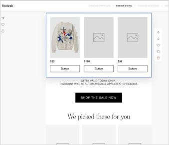
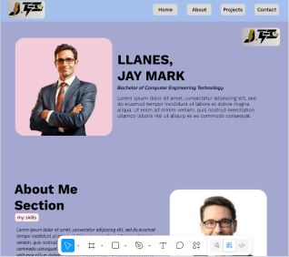
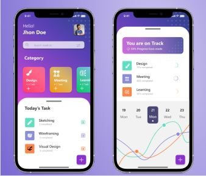
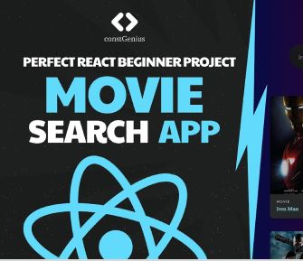
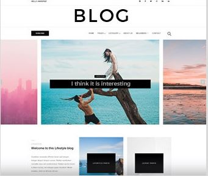
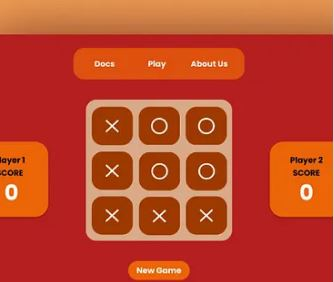

An online shopping website where users can browse products, add items to the cart, and proceed to checkout.

A responsive portfolio website designed to showcase my skills, projects, and experience as a developer.

A productivity web application that helps users manage daily tasks efficiently. Users can add, edit, delete tasks

A movie search web application that allows users to find movies and view detailed information such as ratings, release date, and posters using an external movie API.

A blogging platform where users can read articles and explore different topics. The website focuses on clean typography and content readability.

A simple interactive browser game where two players can play Tic Tac Toe. The project demonstrates JavaScript logic and user interaction.